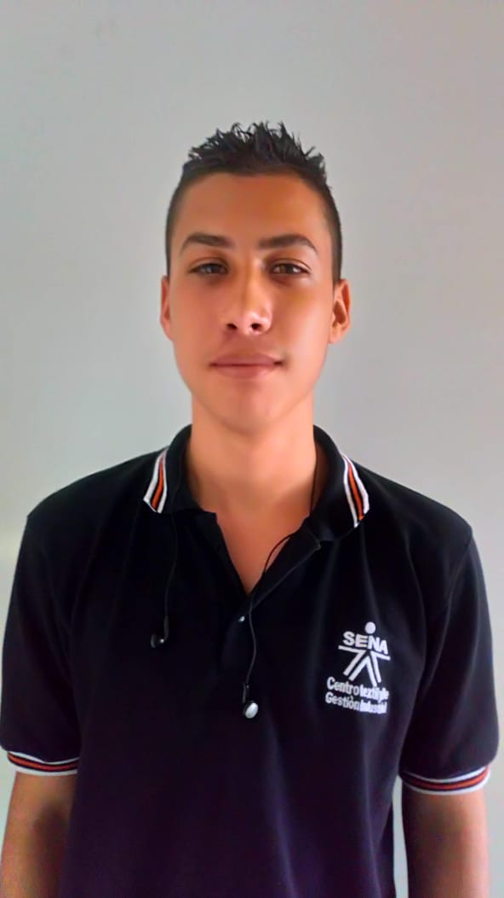

Generar procesos de inclusión social y capacitación informal desde la formación en valores con enfoque de derechos de los niños, niñas y jóvenes víctimas de la pobreza y el desplazamiento, para lo cual, se realiza acompañamiento integrar a las familias, promoviendo el desarrollo comunitario.

La Fundación Huellas será una organización sostenible, reconocida por su capacidad de generar procesos incluyentes de formación en valores con enfoque de derechos a la población infantil juvenil y el acompañamiento psicosocial a las familias, para generar desarrollo económico, social y ambiental en territorios afectados por el fenómeno del desplazamiento y la pobreza.

Daniel Steven Perez M. Productor multimedia daniiperez162000@gmail.com
 Michael Estiven Sánchez Aguiar Productor multimedia Maicol2016aguiar@gmail.com
Sara Melisa García Vega Productor multimedia Garciavega0211@gmail.com
Maria Camila Céspedes Sánchez Productor multimedia mariacamilacespedes4@gmail.com
Laura Valencia López Productor multimedia lauravalencia.17lopez@gmail.com